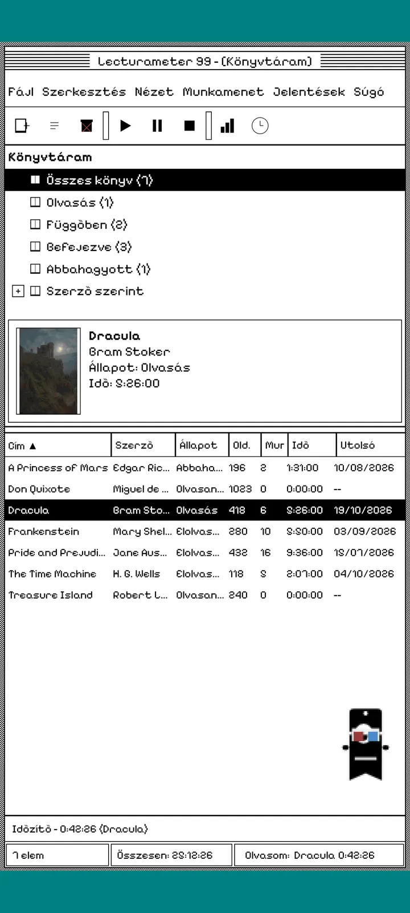
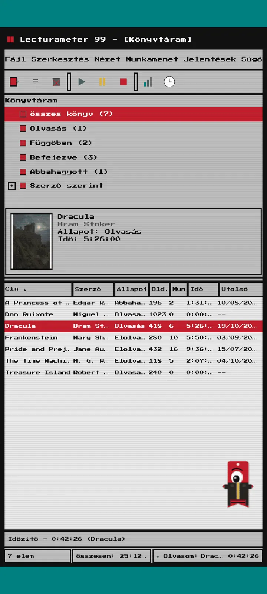
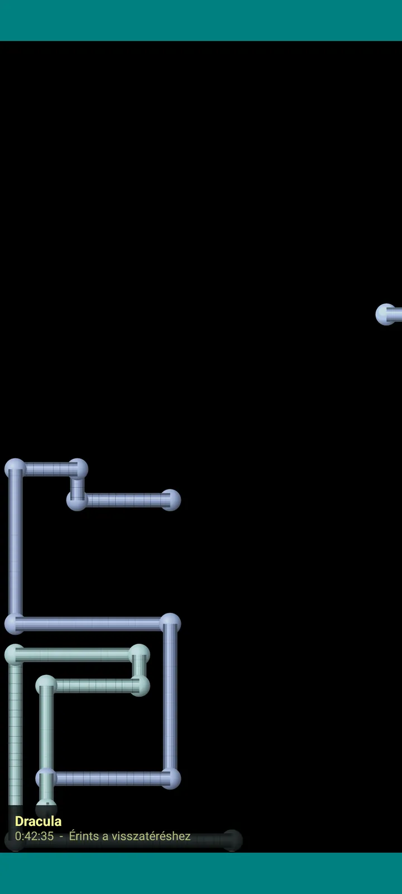

Lecturameter 1999
A Lecturameter, mintha 1999-ben CD-ROM-ról telepítetted volna. Alternatív kliens az apphoz ablakokkal, menükkel és táblázatokkal, amely a valódi biztonsági mentéseidet nyitja meg.

Mi ez
Egy kilencvenes évek végi asztali program a telefonodon. Egy ablak türkiz asztalon, menüsor, eszköztár, mappafa, sűrű táblázat és állapotsor.
- Könyvtárfa: összes könyv, olvasás alatt, függőben, befejezett, elhagyott és szerző szerint
- Táblázat címmel, szerzővel, állapottal, oldalakkal, munkamenetekkel, idővel és utolsó olvasással. Koppints egy oszlopfejlécre a rendezéshez
- Valódi könyvkeresés, ugyanazzal a katalógussal, amit a Lecturameter használ
- Importálja és exportálja a Lecturameter biztonsági mentést és a Goodreads CSV-t. Az adataid veszteség nélkül jönnek-mennek

Miért létezik
Egy kísérlet: a Lecturameter ötletének újraépítése a nulláról, gyökeresen eltérő tervezési alapelvekkel, a valódi app érintése nélkül. Az összes újraértelmezés közül az 1999-es tetszett a legjobban, ezért szórakozásból befejeztem, és teljes klienssé alakítottam. Szándékosan egyszerűbb, mint a Lecturameter: kísérlet, és elvileg nem fejlesztem tovább.
- Időzítő lebegő ablakban, zöld LCD kijelzővel. Mozgatható, tálcára kicsinyíthető, és az állapotsorban tovább számol
- Amikor leállítod, a munkamenet mentése párbeszédablak megkérdezi az oldalaidat, és kiszámolja a tempódat, akárcsak a Lecturameter
- A mentett munkamenetek Lecturameter-munkamenetek: visszakerülnek a modern appba, ha exportálsz egy Lecturameter 1999 biztonsági mentést, és importálod a Lecturameterbe.

Olvasási jelentés
A statisztika egy nyomtatott jelentés: összegzés, könyvenkénti idő blokkoszlopokkal, sebesség oldal/napban, karakterekből rajzolt éves naptár és az elmúlt hét nap.

Munkamenet-előzmények
Munkamenetek könyvek szerint csoportosítva, plusz- és mínuszjeles fában, felül öt számmal: munkamenetek, teljes idő, oldalak, oldal/perc és oldal/nap.

Munkamenet mentése
Dátum, percek, első és utolsó oldal, megjegyzés. Az összegzés gépelés közben kiszámolja az oldalakat és a tempót. Ha eléred az utolsó oldalt, megkérdezi, befejezted-e a könyvet.

Pagi 99
Pagi is 1999-be utazik: pixelesen, szabadon a képernyőn, mint a korabeli irodai asszisztensek. Húzhatod, koppintásra mond egy mondatot, és sárga buborékokban tippeket ad.
Témák
A Classic 98 ingyenes és alapértelmezett. A csomag további hatot ad hozzá, mindegyiket saját háttérrel és saját hangokkal.

Válaszd ki a Nézet menüből
A Nézet, Téma... egy ablakot nyit a hét témával. A váltás egyszerre ér el minden ablakot, az időzítőt és Pagit.
- Classic 98, ingyenes és alapértelmezett: szürke ablakok, sötétkék címsorok és türkiz asztal
- Témacsomag: 1984, Gumdrop, Memory, Towers, Core és 8-bit
- Minden téma saját asztali háttérrel és saját hangokkal érkezik a koppintásokhoz, ablakokhoz és az időzítőhöz
- A Nézet, Témahangok kikapcsolja a hangokat, ha csendben olvasol

Classic 98
Szürke ablakok, sötétkék címsorok és türkiz asztal. Ingyenes, ezzel nyílik meg az app.

1984
Egybites fekete-fehér asztal, pontmintákkal és szögletes ablakokkal.

Gumdrop
Áttetsző színes műanyag, lekerekített gombok és csíkok a háttérben.

Memory
Egy kilencvenes évekbeli lemezes konzol menüi, sötétkék árnyalatokban.

Towers
Egy másik kilencvenes évekbeli lemezes konzol, éjkék alapon világoskék vonalakkal.

Core
Fekete-zöld konzol, mint egy képernyő, amely sosem kapcsol ki.

8-bit
Vastag pixelek, kevés szín és kockás betűk.

Próbáld ki, mielőtt fizetsz
Koppints egy zárolt témára, és az egész app átvált rá. Ha vásárlás nélkül zárod be, visszatér az előző téma.
Képernyővédők
Csak akkor jelennek meg, ha fut az időzítő, és nem nyúlsz a telefonhoz. 1, 3 vagy 5 percet várnak, vagy soha. Egy koppintás visszavisz, az időzítő pedig tovább számol.

Repülő könyvek
Pixeles könyvek csapkodnak a borítójukkal egy fekete képernyőn át.

Betűmező
Sokféle ábécé betűi úsznak el melletted, mint egy csillagmező.

Oldalcsövek
Oldalakból álló csövek, amelyek addig rajzolódnak, amíg meg nem telik a képernyő.

Pattogó Pagi
Pagi a képernyő széleiről pattan vissza.

Olvasóóra
A munkamenet ideje nagy LCD számjegyekkel.

Jelmezek Paginak
Nyolc jelmez Pagi 99-nek. A Nézet, Pagi jelmeze... menüben választhatod ki őket, és fizetés előtt fel is próbálhatod.
- Kazettás magnó
- Fordítva hordott sapka
- 3D szemüveg
- Neon napszemüveg
- Floppy a kézben
- Bőrdzseki
- Zsebállat
- Kartonkorona
Bolt
Az app ingyenes, és teljes értékű az olvasás rögzítéséhez. Amit megvehetsz, csak a külsejét változtatja meg.
Az egész app, időkorlát nélkül.
- Könyvtár, keresés, időzítő és munkamenetek
- Olvasási jelentés és munkamenet-előzmények
- Lecturameter biztonsági mentés és Goodreads CSV, be és ki
- Classic 98 téma és Pagi 99
- Nincs fiók és nincs reklám
Egyszeri fizetések, előfizetés nélkül.
- Témacsomag, €3.49: 6 téma háttérrel és hangokkal, plusz a képernyővédők
- Képernyővédők, €1.99: mind az 5 képernyővédő
- Pagi-jelmezek, €1.99: mind a 8 jelmez
- A teljes 1999, €4.49: témák, képernyővédők és jelmezek
Választható borravaló a Súgó menüben, ha meghívnál egy kávéra.
A témákat és a jelmezeket fizetés előtt élőben kipróbálhatod. Ha vásárlás nélkül zárod be, visszakapod, ami előtte volt.
Mi változik a Lecturameterhez képest
Ugyanaz, mint a Lecturameterben
- Ugyanazok az adatok: könyvek, munkamenetek, állapotok, pontszámok és jegyzetek. A biztonsági mentés fájlja mindkét appban ugyanaz.
- Könyvkeresés cím vagy szerző alapján.
- Valódi időzítő: a háttérben is tovább számol, még ha bezárod az appot is.
- Nincs fiók, nincs reklám, nincs kapcsolat, csak a könyvkereséshez.
- Ugyanazok a nyelvek, mint a Lecturameterben.
Csak az 1999-es kiadásban
- 1999-es asztali felület. Semmi Material.
- Valódi ablakok: húzhatod, kicsinyítheted és az X-szel bezárhatod őket.
- Szöveges olvasási jelentés, karakterekből rajzolt naptárral.
- Helyi menü hosszú nyomásra, és billentyűparancsok, ha billentyűzetet csatlakoztatsz.
- Pixeles Pagi 99 tippbuborékokkal.
- Választható témák saját háttérrel és hangokkal, képernyővédők az időzítő futása alatt és jelmezek Paginak.
Amit szándékosan kihagy
- Nincs Pro és nincs előfizetés. Az olvasás rögzítése teljesen ingyenes, a bolt csak külsőt árul.
- Nincsenek kihívások, bingók, éves Wrapped vagy widgetek.
- Nincs elmerülő munkamenet, háttérhangok vagy Google Drive-os biztonsági mentés. A biztonsági mentés fájlként mentődik.
Zárt teszt
A Lecturameter 1999 zárt tesztelés alatt áll a Google Playen. Az iOS később jön, egyelőre dátum nélkül.
- Csatlakozz a csoporthoz groups.google.com/g/lecturameter-1999
- Jelentkezz tesztelőnek itt: play.google.com/apps/testing/com.lecturameter.r1999
- Telepítsd innen: Google Play
Zárt tesztelés a Google Playen, az iOS később. Olvasd el a blogbejegyzést, hogy megtudd, honnan ered, és mire számíthatsz.